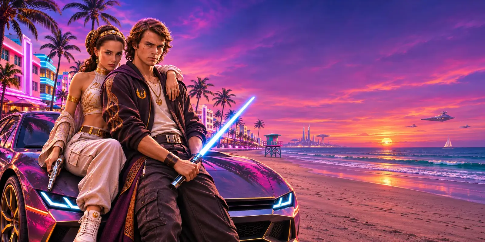
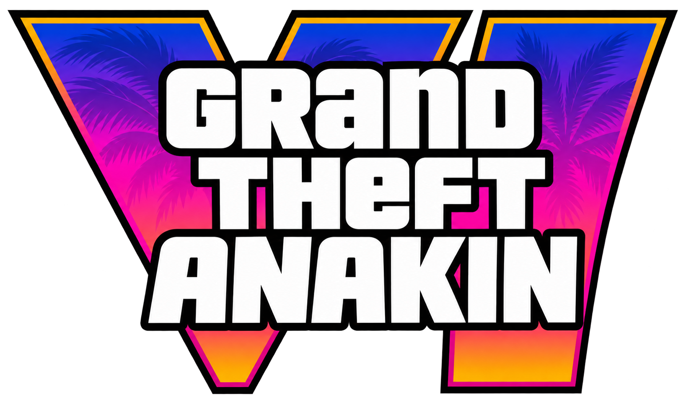
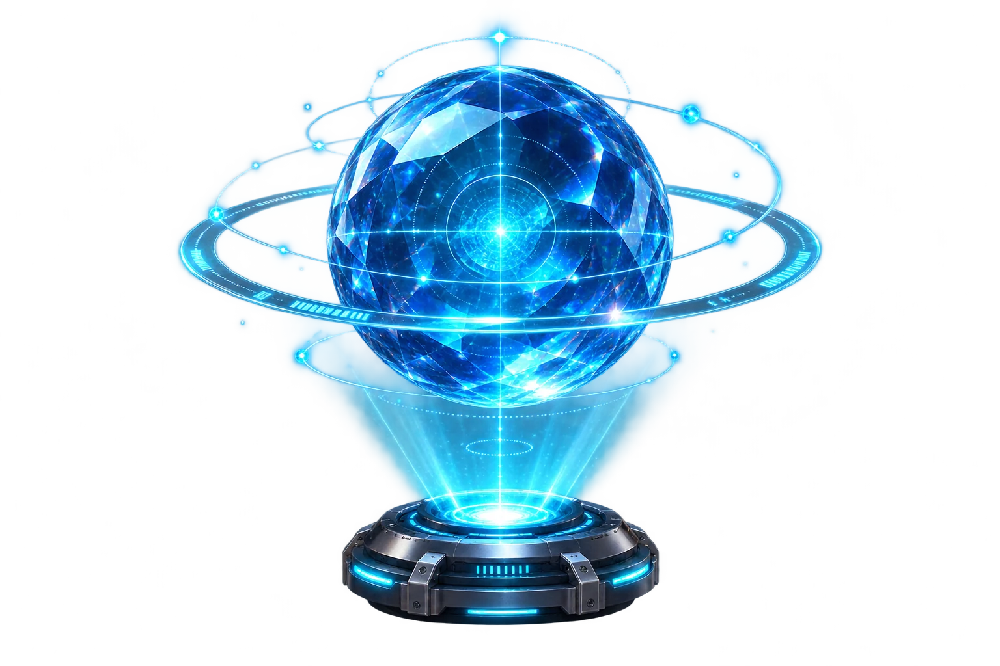
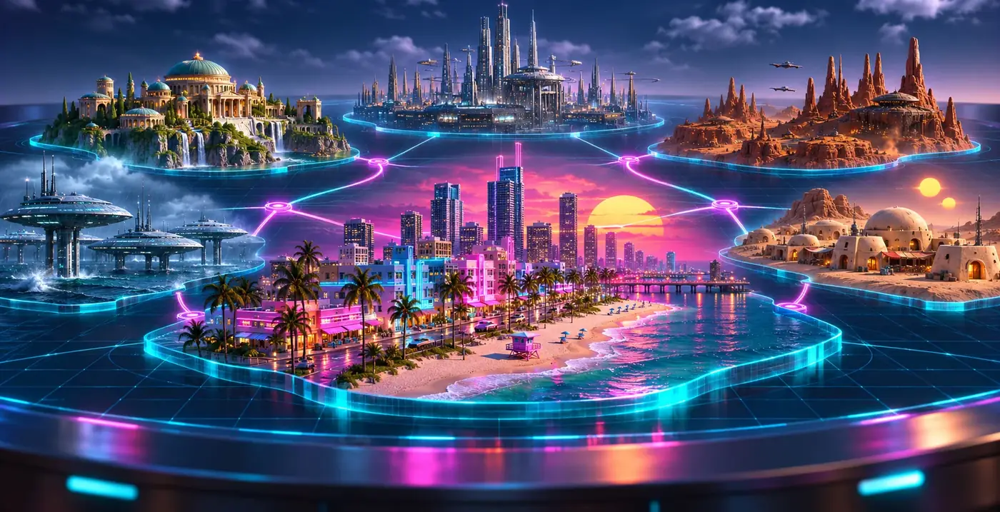
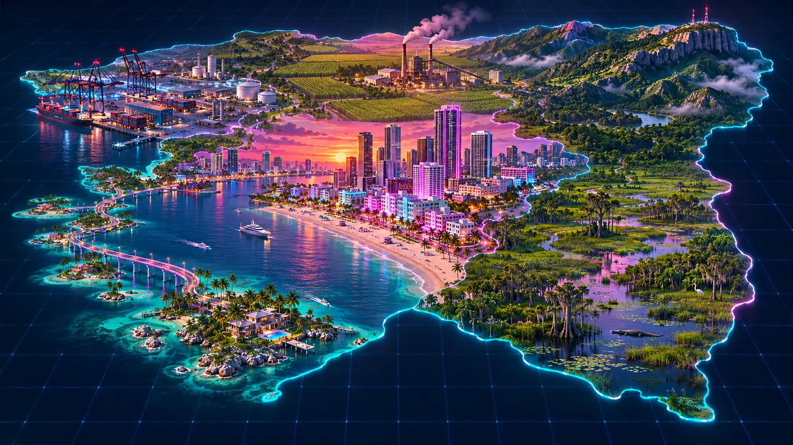

A GALAXY OF TROUBLE HAS LANDED

THE FORCE MEETS THE STREETS
A stolen artifact. A city on the edge. One crew with a galaxy to cross.
01 MISSION BRIEFING
THE GALAXY
IS YOURS.
A stolen galactic artifact has surfaced in Leonida. Anakin and Padmé need local help to find it before a dangerous syndicate moves it off-world.
Jason and Lucia know these streets. Together, the crew has one night to get it back.
Meet the crew
INCOMING TRANSMISSIONMISSION // 00102 THE PEOPLE BEHIND THE PLAN
Meet the crew.
Two worlds. Four allies.
One very complicated night.
Select a character to see their role in the mission.
03 YOUR MISSION, YOUR MOVE
Choose your route.
Three paths through the story.
Every choice has an ending.
Choose a route to discover its story and outcome.
04 THE WORLD IS YOURS
The galactic map.
Six destinations. Countless ways
to find what you came for.
SELECT A DESTINATION TO EXPLORE

A fictional crossover map created for the story.
05 LOCAL INTELLIGENCE
Leonida: Beyond the Neon.
Start on familiar streets.
Find something entirely new.
FOLLOW THE CREW’S LOCAL LEADS

A stylized mission map; locations are creative interpretations.
06 TOKEN DETAILS
TOKENOMICS.
Everything you need to know, all in one place.
Details will appear here once provided.
THE STORY IS JUST BEGINNING
JOIN THE CREW.
Vice City is only the beginning.
Stay tuned for the next transmission.